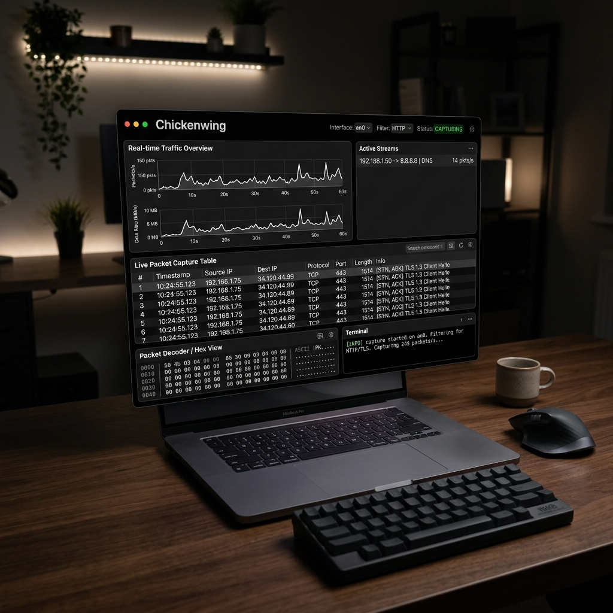

Packet Sniffing,
Redefined.
High-performance network analysis in a brutalist monochrome HUD.

Real-time Capture
Monitor incoming and outgoing traffic with microsecond precision. Filter by protocol, IP, or port in real-time.
Monochrome HUD
Designed for focus. A high-contrast, distraction-free interface that puts the data at the center.
Threat Detection
Identify sensitive data leaks and suspicious patterns automatically with built-in heuristic analysis.
How to Run
Because Chickenwing is a powerful security tool, macOS requires a few steps to run it safely:
- Download the .dmg and drag Chickenwing to your Applications folder.
- Right-click the app and select Open (this bypasses Gatekeeper for unsigned builds).
- The app will request Admin Privileges to access the network interface (en0/en1).
- Enjoy! No additional dependencies (like Python) are required.